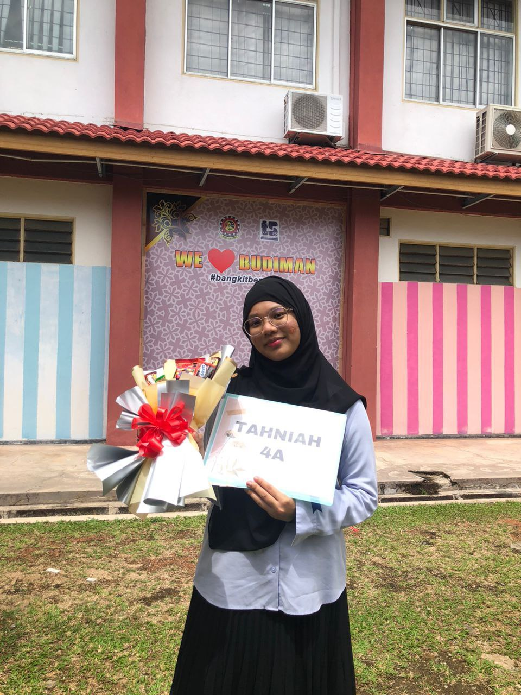

| Name | Lora Izora Arus Binti Rizal Arus |
| Date of Birth | 15 July 2005 |
| Place of Birth | Kedah Medical Center |
| Age | 20 |
| Gender | Female |
| Siblings | Three. I'm the youngest. |
This is when I receive my SPM results and got my Dean List certificate

Throughout my academic journey as an Information Management student, I have developed good technical skills in HTML and CSS, which enable me to design digital spaces that are both functional and aesthetic. As an academic and internship student, I have developed skills in Records Management and Filling. Plus, I also have skills that involved creating videos for multimedia projects. This is because I am a detail-oriented person and enjoy the technicality involved in managing information that can be overwhelming, yet flexible enough to adapt to the latest trends. Here are an example of a video that I have created.
However, when I am not not concentrating on academics, I pursue some favourite hobbies that inspire me and motivate me to continue working on my creative projects everyday. The hobbies that I enjoy include wathing volleyball match, which I find fascinating in terms of team work and pace. The other hobby that I enjoy includes listening to music, which fills me with inspiration on a daily basis, whether it is listening to artists that I like or following volleyball team performances whne i want to feel motivated after a creative project.